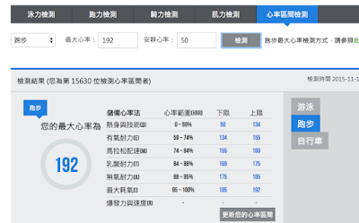
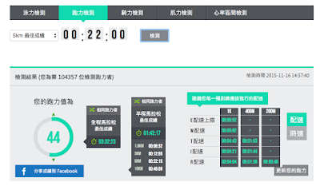

全馬十六週破 PB 案例之二：4 小時 02 分→3 小時 33 分
平均每週只練跑 45 公里，沒想到 PB 可以破到 333
上馬過去第五天了，多巴胺與內啡肽開始消退，可以冷靜地留下點記錄了。這是上海馬拉松第二十週年，主辦方為跑者營造了一場前所未有的盛宴。於我，這是我跑步滿兩年的收成成果。這一切始於 2013 年上馬的 10 公里賽，兩年後的今天我全馬跑出 3 小時 33 分。
也許全馬跑 333 的成績對某些人來說沒什麼了不起，但是於我很難得。特別是賽前三個月跑量分別只有 200km→220km→250km，這樣的成績特別可貴……對體重 77kg 的我來說，甚至完全超出了我的想像，讓我覺得幸福來得如此突然。最關鍵的還不是成績，是我這次沒有跑崩！我這次沒有跑崩！我這次沒有跑崩！不撞牆！不抽筋！
而且這次上馬中，訓練營裡後半馬比前半馬快的學員竟然大量存在，這太神奇了！
都跑了兩年馬拉松了，這次的準備應該是週期最長的一次，但花在練跑步的時間卻少多了。這一次國峰老師開的課表強調的是週期化訓練，一個大週期共 16 週，各種強度有規律地互相搭配……不知從何寫起，或許流水賬更能準確的表達我心中那「太神奇了」的感受……
Garmin 特訓營－－徐國峰老師的科學化訓練
夏天很幸運的再次被 Garmin 馬拉松訓練營錄取，為什麼說是幸運？
我的 PB 真的不快 2014 北馬跑出 402。另外 2015 冬天訓練很少，無錫我只跑出了 416。跑圈有太多大神值得被選上，Garmin 選擇我的確有點受寵若驚。
Garmin 請來了台灣研究馬拉松的徐國峰老師，教授我們跑馬的知識。回頭想想真的很接地氣。首先他也是業餘跑者，他更懂業餘跑者需要什麼，能做到什麼？國內的訓練營，大多專業教練客串，或著退役下來的運動員帶，他們可是專業的，很多理念要麼太激進要麼太保守，不一定適合有一定基礎的業餘跑者。
關於課程中的幾個關鍵詞
###
- 最大心率：
老師通過跑橋測試，幫助我們測出了自己的最大心率。根據最大心率來定義後面的訓練計畫。跑橋測試方法簡單的說就是先暖身，然後用 80%→90%→100%的能力衝三次橋，記錄下你的最大心率，如果 100%那次心率是最高的，那再沖一次，保證最終那次的心率是最高的。跑圈混跡一年有餘，關於最大心率也是知道的，一般我們的認知，用 220 減去你的年齡作為你的最大心率，可最大心率因人而異的，這樣並不科學。同時，這最大心率怎麼用，跑圈的說法真的好多，但都不是系統的。這也是大家會跑崩的一個很重要的原因吧。
###
- 心率區間：
根據你的最大心率和你的靜止心率測算你的心率區間範圍，每個不同周期的訓練全部圍繞著不同的心率區間進行，以達到刺激心肺和肌肉的功效。而不是蠻幹多少多少公里，這和跑圈的思維挺不一樣的。
這玩意真的很神奇，之後我們的訓練，甚至最後的比賽基本就是圍繞這個進行的，這也是很多跑友們看不懂佳明課表的原因。老師教我們根據各人的最大心率，把自己的心率分成五個心率區間：
- 5 區 95～100%HRR = I 心率區間
- 4 區 88～95%HRR = A 心率區間
- 3 區 84～88%HRR = T 心率區間
- 2 區 74～84%HRR = M 心率區間
- 1 區 59～74%HRR = E 心率區間
一般跑馬拉松的時候把心率強度控制在 2 區就好了，3 區可以維持 1 個小時左右，第 5 區就只能 10 分鐘了，所以跑長距離的比賽不要進入第 5 區。
由於每人的安靜心率區間也不同，還會根據自己的最大心率和安靜心率來計算儲備心率，採用儲備心率來控制自己更加安全有效。
- 儲備心率=目標心率強度 ×（最大心率-安靜心率）+安靜心率
在百度中搜尋「耐力網」，裡頭的「能力檢測」可以查找你的心率區間

###
###
- 姿勢跑法：
這個我最講不清楚基本意思就是用正確的方式讓你觸地時間和離地高度高度降低，以達到節省體力，用最經濟的方法達到你最好的成績。
我這裡必須給佳明的表打個廣告了，620、920 、 Fenix3 結合心率帶都具備了記錄這方面訓練數據的功能。這些功能，其他品牌的手錶是不具備的。這些數據，在平時訓練完後我們經常互相討論，讓跑步變得更數據化，很好的滿足了數據控的需求，要知道大部分跑友都是理工科出生的。
###
- 肌力訓練
佳明安排我們在亞歷山大會所做肌力訓練。大夏天，在冷得不能再冷的空調間裡，練的手腳抽風汗如雨注的經歷，每個學員都有過。我其實挺不太理解這個課的價值，畢竟跑步不就是跑步，擼鐵深蹲真的能提高跑步成績？所以這個課我後期做的比較少。
其實挺後悔的，如果多練一點，是不是 330 我也能實現。
###
- 滾筒按摩
這玩意真的酸爽，做了你就知道。開始覺得挺無趣的，要不是我家小妞在我滾軸的時候，坐我身上當搖搖車玩，然後上癮。我或許不會堅持。當然還有個很重要的原因，老師說過，按摩是預防受傷和防止比賽抽筋的一種很好的方式！
###
- 跑力值
通過 3km 的測試，通過耐力網可以得到你的跑力值，根據你的跑力值在後期的訓練時候用不同的配速進行不同強度的訓練，以求能在馬拉松賽中達到你預期的成績。下圖是開營之初訓練營的測試，得到我全馬可以跑到 324 的成績，半馬可以 138 。當時我是不敢想的。因為我後半程真的很容易崩。之前有過四次全馬經歷，沒有一次最後是不痛苦的，這次竟然不僅不痛苦，而且覺得時間飛快就過去了，後比前還要快點，感覺比賽一會就結束了。最終今年全馬 333、半馬 138 的結果基本和測試結果接近，說明這次訓練效果基本達到了老師的預期。當然也完全超出了我的預期。

寵物課表
國峰老師針對不同目標的學員制定了兩套訓練計畫。以往 PB 在 330 以內的我們營裡稱為「禽獸課表」、以破四為目標的我們叫它「寵物課表」（實踐證明大部分學員只要能完成寵物課表，最後就能實現自己希望的目標）。
課表分四個週期，共十六週。前面 7 週全是跑 E 心率強度逐漸加大，但是每兩週後會有一次減量週。這樣的勞逸結合進行跑馬訓練，跑友們都懂，但是如何執行，怎樣執行的科學，我真的不懂。
我對這個課表一開始是很疑惑的，一開始的兩個月，天天跑 E 心率，那個配速和自己期望的目標配速差太多了，究竟有沒有用，真的不好說。
我至少在課堂上問了老師兩次：「每次訓練時間這麼短，LSD 也不允許超過 2 小時 30 分，和我們傳統理解的 LSD 距離和時間都不匹配，如何能在比賽中不跑崩？」
老師用他溫和而堅定的台灣腔告訴我：「請相信我，只要你按照這個課表走，一定可以做到。」我真的將信將疑，直到上馬衝線，我才徹底被這套訓練計畫征服。
###
- 回顧課表的內容
我的課表完成率大約在 60%-70%之間。國峰老師也一再強調：如果你錯過課表，千萬不要補前面的課，這樣容易受傷。
ST 解釋就是用無氧全力跑 100 米，然後歇 30 秒繼續 6st 就是做六組這樣的跑，主要作用是去除 E 心率慢跑的記憶，不要讓身體記住這個慢的速度。而 E 心率慢跑有助於你肌肉裡微血管的生長以及粒線體密度與有氧酵素濃度增加。
後期進入速度耐力訓練，也就是我們常說的間歇。這段時間真的很苦，又是夏天的尾巴，又是全力奔跑，那段時間是上馬前最痛苦的時間，只要堅持下來，目標基本都能達到。這個階段我大概完成 70%，回頭想想虐的真的可以。
最後是減量階段，老師要求主要用你的目標配速，也就是你的 M 配速訓練，讓身體記憶住你的馬拉松速度。量隨著比賽的臨近逐漸減少。
但國峰老師不斷強調，要使週期化訓練發揮最大的效果有個大前提：就是你在這個週期裡不能參加過全馬比賽，否則訓練效果至少打６折。我在想我能最終超計畫的達到目標成績，和不亂比賽也是有關係的。跑圈太多的要貨，各種比賽都參加，這週一座山，下週一個公路馬，既容易受傷，又不能出自己的好成績。當然很多跑友，把這當作旅遊，我覺得追求不同，不做評論。只能說大家想法不同，只要玩的開心，怎樣都好。
###
全馬比賽策略
- E 強度：59 – 74% = zone 1.0~2.0
- M 強度：74 – 84% = zone 2.0~3.0
- T 強度：84 – 88% = zone 3.0~4.0
- A 強度：88 – 95% = zone 4.0~5.0
- I 強度：95 – 100% = zone 5.0~
- 2A 策略--初階／初馬跑者(目標在四小時附近者)：
- 前面 20k 的心率控制在區間 1.7~2.1，介乎於 E 與 M 強度之間，前面的 20 公里就當作是暖身跑。
- 中間 20-35k 的心率在區間 2.1~2.4，此時應該仍然感覺遊刃有餘。
- 最後 35-42k 的心率在區間 2.4~3.0，最後七公里，千萬不能急，平穩地到達終點即可。
- 2B 策略--進階跑者(目標在 3:30 以內者)：
- 前面 20k 的心率控制在區間 2.1~2.5，盡量不要超過 2.5，維持著適當的配速前進。
- 中間 20-30k 的心率在區間 2.5~2.6。
- 之後 30-35k 的心率在區間 2.5~2.8。
- 之後後 35-40k 的心率在區間 2.9~3.0。
- 最後 40-42k，最後 2 公里，不管心率了，若有餘力的話就盡量把力氣用盡吧！直至衝過終點線！
上馬那天我選擇了「2B」的配速方式，其實對我來說有點激進，畢竟我訓練目標是 3 小時 45 分，最低限度也一定要破四。但之前有過的一次半馬測試我達到了 1 小時 38 分的成績，而跑出 1 小時 38 分附近的伙伴們都在準備嘗試破 3 小時 30 分，對速度的渴望讓我選擇了激進，當然這也是有一定基礎的激進跑法。
###
###
最後一堂課：賽前提醒
國峰老師在最後一堂課的要求是：「當你比賽的時候，不要看錶上的時間，只留下心率區間距離時間。按照策略跑完，用你那時候最好的身體，至於結果怎樣，都是前期訓練的結果。你無法控制結果，只能盡情比賽，專心發揮實力。」
實踐告訴我，老師的策略，的確可以幫助跑者在能力範圍內不跑崩。因為週期性的課表，在不斷累積你的能力，同時把你受傷的風險降低到最低。
這次上馬是我，第一次可以拿得出手的分段成績和我的 2014 北馬比較下
前面 20K 沒有啥區別，這次上馬，我的前半馬和後半馬成績幾乎都一樣是 1 小時 46 分左右，這跟 2014 年的北京馬拉松比較起來雖然前半馬成績接近，但後半馬完全是天與地的差別，去年的後半馬直接就跑崩掉了。這讓我最後跑出 3 小時 33 分的成績。
這也是我最感激訓練營給我巨大幫助的地方。
你們讓我做到了我根本沒有想到的事情。
再次謝謝老師！謝謝佳明！
＃2015 年 11 月 8 日--我的上馬經驗＃
從挑戰 2014 年北馬破四失敗開始，我就開始心心念在今年的上馬能破四。基於 2014 年上馬 21 公里跑出 1 小時 42 分的水平，給自己定了上馬 3 小時 45 分的目標。
那時上馬精英要求只有 3 小時 45 分，沒想到今年直接提高到了 3 小時 30 分(只要今年男子成績在 330 內，明年上馬就不用抽籤直接錄取)。不過我的訓練計畫一直圍繞 3 小時 45 分進行的，所以對 330 真沒有啥期望。即使在賽前預估最好可能，也只是跑進 340，對跑進 335 真的想都沒有想過。
必須承認我們的訓練營很雞血，比賽前一周，一群人開始不吃米飯了，說要讓糖原枯竭。到比賽前三天，大家開始曬今天我乾了多大碗的面，多大碗的飯。不管多瘋狂，有一點是對的，全馬必須補充足夠的糖原。所以，這次比賽我還真沒怎麼餓過。
賽前一天，老老實實的每頓都吃五兩麵條，吃的老闆娘都免費給我加面，還問我夠不夠。晚上整理好所有的裝備，自己一人七點多就躲到客房去，磕了兩顆安眠藥，早早的睡去了。
第二天凌晨三點就起床，吃完早飯和牛奶，換上衣服，在手上寫上老師的配速策略和孫英傑老師說的 15 公里補三顆、第 30 公里補兩顆鹽丸的計畫，帶上四包能量補給膠出門。
等來了熊貓的車，坐在後排和主席聊今天我打算跑 2B 策略，突然之間發現，我胸口少了什麼，對，心率帶，我忘記帶了。頓時心中無數草泥馬。熊貓第一次聽說 2B 跑法，說你這是夠 2B 的。那時候，心真的涼了一大截，我之前的準備似乎就要白費，覺得自己真２Ｂ！
急中生智，詢問群中誰還沒有出門，誰還有多餘的心率帶，這時候，學委 robin 出現了，太棒了！頓時，對自己有了信心。
我想說，對於業餘跑者，心率數據真的很重要，他的變化可以幫助你評估你當時的身體狀態，可以給你的安全帶來很大的幫助，特別是你準備跑你 PB 的時候，他就是你的控制帶和生命帶。跑步的初心都是為了健康，不能跑嗨了，什麼都不管不顧是不！
來到起點，今年的上馬管理比往年嚴格，次序也相當不錯。雨水如天氣預報一般，慢慢小了，比賽前半小時完全停了。開賽前 15 分鐘，等來了 robin，拿到心率帶，匹配完畢，所有的擔心和緊張都消失了。唱國歌的時候我心率只有 85bpm 感覺自己真的很平靜了。利用領導講話的時間用廣口瓶解決了生理問題。靜等發槍。
發槍，比賽開始。
因為站在 A 區，如願的用自己的目標配速 500 起跑，不一會就逮到了主席和熊貓，又見到了 345 兔子張磊還有琴。一個黑影飛過，快看這是於嘉（央視 5 的籃球節目主持人，也是個馬拉松愛好者，PB3 小時內），本想跟下，聊兩句，一看配速比我快了不少，直接放棄。
又沒過多久，我見到了盈盈，那個 14 北馬在 36k 處從我身邊輕盈的過去，然後讓我徹底爆掉的盈盈。於是有了跟一會的念頭。大概跟到 4.5k 處，有個人和她會合了，盈盈也就突然提速，本想試著繼續跟下去，一看心率超出了目標區間，想想跟了必爆，就只能目送盈盈遠去，繼續堅持心率跑法。後面開始按照每逢水站小口補水的策略，前進到 15k 開始補 3 顆鹽丸 30k 補兩顆鹽丸，15k、25k、30k、35k 補了四包能量膠。當 27k 首次到達龍騰橋時，雙手合十，向天許願，希望回來的時候不會崩。
當 36k 返回龍騰橋，我的身體除了有點胃部的疼痛（這是老毛病了，看來健康的飲食很重要），手指有略微的發麻（也是老毛病，通過改變手臂的擺動方式可以緩解），完全在控制中，這種感覺和北馬完全不一樣，我知道我離開自己的目標不遠了，即使後面崩了，要跑進 4 小時也是妥妥的了。
按照心率要求，後面不斷把心率提高到更高的區間，配速沒有掉，還是維持在 5'00/km 左右。這時候跑馬最美妙的事情發生了，雖然你沒有提速，但是因為別人掉速，你會發覺自己變快了，不一會追上了菜飯，又追上了 robin 幾句寒暄，繼續維持配速前進。
38k 左右，我抬頭一看，猜我見到了誰，又是盈盈！想提速追上去，腳抽了下，不敢發力，繼續維持原來的配速前進，因為已經到最後 2k，按照課表不用管心率了，但這時維持配速也是件不容易的事情了。沒過 500 米就追上盈盈了，人生第一次反超盈盈，覺得自己挺牛逼的，（別說我總和女的比，盈盈拉爆的漢子可是數以萬計的）特有能量的感覺。或許就是因為這樣，這次上馬完全沒有撞牆的痛苦。跑完龍華中路轉回體育場，還有 200 米，我的上馬就能 sub335 完成了，刻意放慢了腳步，想有個美美的衝線，可不知道最後演成這樣，我真的醉了，我只能說球哥，我跪了！
跑完第一時間，回過身，給這條 42,195 米的賽道磕了頭，感謝你讓我經歷的一切。包括之前付出的所有汗水和痛。最終跑出 3 小時 33 分，在那時就是最好的我，我很滿意，我很感激。
站起身，拍完照，發完微信，等著跑友們的到來，每一位完成 42,195 米的都是英雄！
這次上馬，我的前半馬和後半馬成績幾乎都一樣是 1 小時 46 分左右，這跟 2014 年的北京馬拉松比較起來雖然前半馬成績接近，但後半馬完全是天與地的差別，去年的後半馬直接就跑崩掉了。
讓我超計畫的完成了目標。

【圖】如期等來了為我們關門的徐國峰老師，非常感激老師給予的指導，